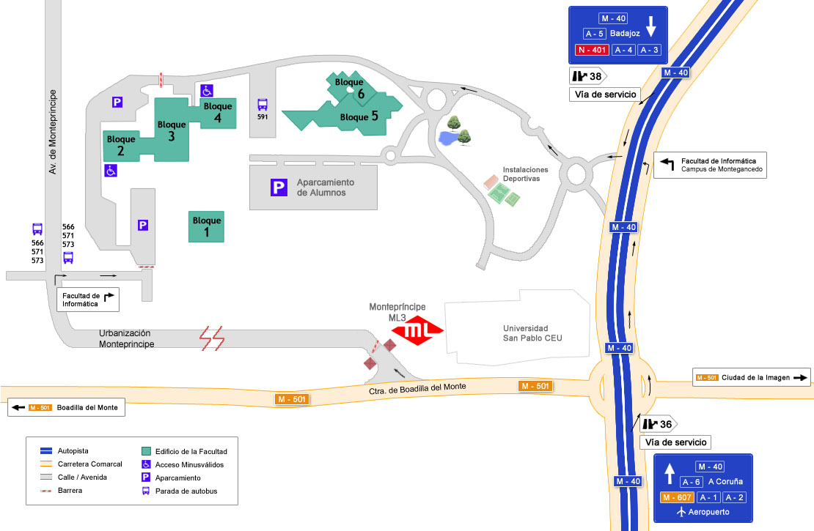
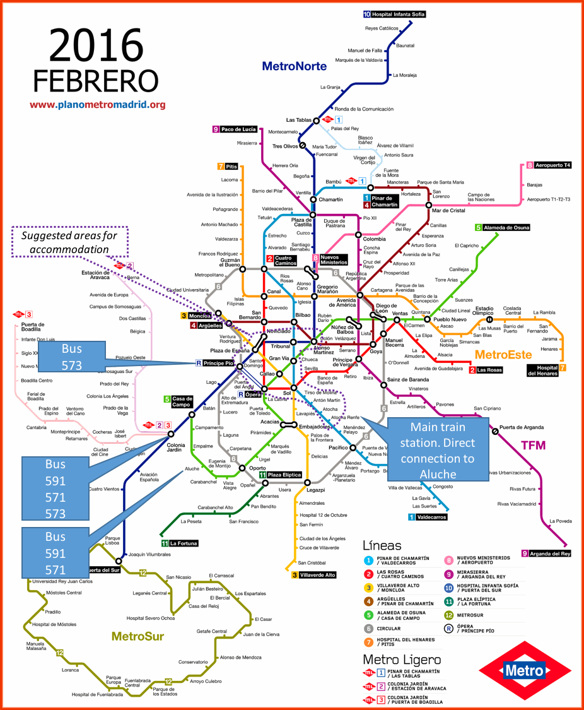

")
")
Contact
Address
Ontology Engineering Group (OEG)
Office 3206
Escuela Técnica Superior de Ingenieros Informáticos (ETSIINF)
Universidad Politécnica de Madrid
Avda. Montepríncipe, s/n
Boadilla del Monte, 28660, España

How to get here
By public transport
There are two ways of getting to the Faculty by public transport. By bus, you can take one of the following lines:
- Route 591: Madrid (Aluche)-Boadilla (F.Informática)
- Route 865: Madrid (Ciudad Universitaria) - Campus de Montegancedo
- Route 571: Madrid (Campamento)-Boadilla (Lomas - Bonanza)
- Route 573: Madrid (Moncloa)-Boadilla (Urbanizaciones)
- Route 566: Boadilla (Ronda)-Pozuelo (C. Francia)
You can also come by Light Metro, taking the line 3 (Colonia Jardín - Puerta de Boadilla) and getting off at Montepríncipe station. As you leave the station, turn right and make your way to the Faculty along Av. Montepríncipe.
By private transport
If you come by car and you come by the M-40, you must exit at one of the following junctions: 36 (northbound) or 38 (southbound).

{kind=link}
{kind=link}
{kind=link}
Created under Creative Commons License - 2015 OEG.